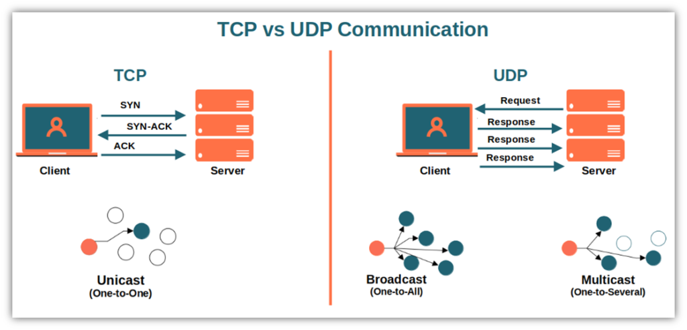

Protocolli TCP e UDP
I protocolli TCP (Transmission Control Protocol) e UDP (User Datagram Protocol) sono fondamentali per il funzionamento di Internet. Ognuno di essi ha caratteristiche uniche che li rendono adatti a situazioni diverse. Scopriamo insieme come funzionano e le loro principali differenze.

Caratteristiche principali
- Orientato alla connessione: utilizza il processo di three-way handshake per stabilire una connessione sicura.
- Affidabilità: garantisce la consegna dei dati tramite conferme (ACK) e ritrasmissioni in caso di perdita.
- Controllo del flusso: regola la trasmissione dei dati per evitare il sovraccarico del destinatario.
- Controllo degli errori: verifica e corregge eventuali errori nei dati trasmessi.
- Applicazioni principali: Web browsing (HTTP/HTTPS), email (SMTP, POP3, IMAP), file transfer (FTP), accesso remoto (SSH).
Caratteristiche principali
- Senza connessione: trasmette dati sotto forma di datagrammi, senza handshake iniziale.
- Velocità: molto rapido perché elimina controlli come conferme e ritrasmissioni.
- Mancanza di affidabilità: non garantisce la consegna dei pacchetti né la correzione degli errori.
- Adatto per broadcast e multicast: consente la trasmissione a più destinatari contemporaneamente.
- Applicazioni principali: Streaming video/audio (YouTube, Netflix), gaming online, VoIP (Skype), DNS, sincronizzazione oraria (NTP).
Differenze principali
| Caratteristica | TCP | UDP |
|---|---|---|
| Connessione | Orientato alla connessione | Senza connessione |
| Affidabilità | Garantita con ritrasmissioni | Non garantita |
| Velocità | Più lento | Molto rapido |
| Controllo del flusso | Presente | Assente |
| Applicazioni principali | Web browsing, email, FTP | Streaming, gaming, VoIP |